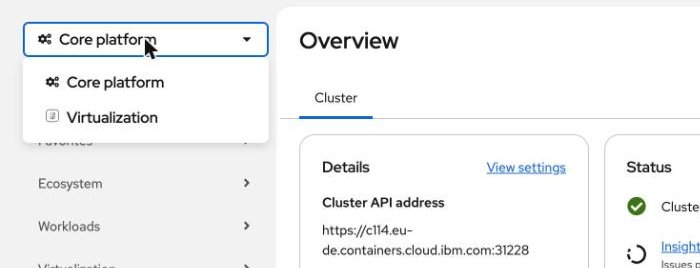
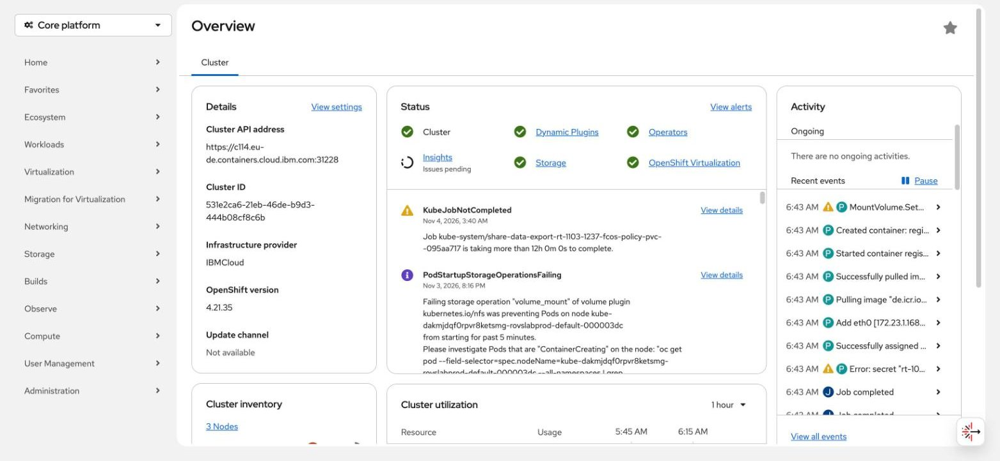
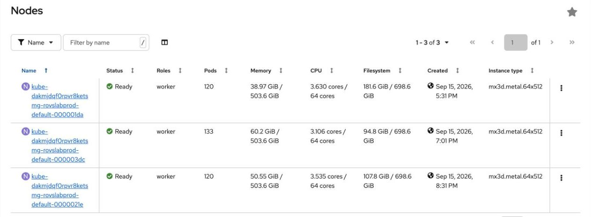
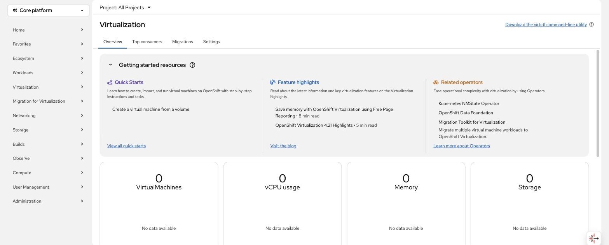
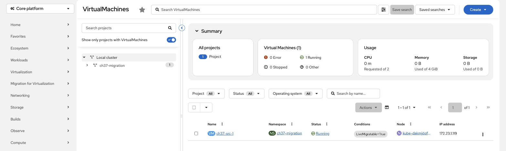

Find your way around a cluster
By the end of this unit you'll be able to find a ROVS cluster, read its health in the console and with oc, and tell what's missing on purpose from what's broken.
Northgate Freight is a made-up haulier that's moving off vSphere. The screens and output in this unit are real. Northgate's first ROVS cluster is ready, and its admins want to know where to look first.
Every screenshot and line of output in this unit comes from a real run on a lab cluster, apart from the review question. Some names are shortened to fit the page.
Three screens to know
These are real screens. Click where you'd click on a live console. After two misses, the page marks the right place.

Older material says to switch to the Administrator perspective. Which entry holds the VM views?
Show where
Right. Virtualization. On OpenShift 4.21 there's no Administrator perspective. The switcher offers exactly two entries, Core platform and Virtualization. A cluster administrator can also reach the VM pages from the Core platform menu.

On a self-managed cluster this field names the update stream you chose. Which field reads differently on ROVS?
Show where
Right. Update channel reads Not available, because IBM looks after the upgrade path. You don't pick a channel.

Which column tells you the server flavor?
Show where
Right. Instance type. It reads mx3d.metal.64x512, which is a bare metal flavor. All three nodes have the role worker, and there's no control-plane node.
Where things are
The console layout matches the vSphere Client roughly like this. It's a rough match of our own, and IBM doesn't describe it this way.
Northgate's admins open the IBM Cloud console to find their new cluster. Where is it listed?
Show the answer
Infrastructure > OpenShift virtualization. A ROVS cluster doesn't appear under OpenShift > Clusters. On one account that page showed no clusters at all while ibmcloud ks clusters listed them. Infrastructure > OpenShift virtualization is the only place they appear in the console.
Read the health of a cluster
Run each command in turn. The output is what a ROVS cluster returned.
oc get clusterversion
NAME VERSION AVAILABLE PROGRESSING SINCE STATUS version 4.21.27 True False 36d Cluster version is 4.21.27
ROVS needs OpenShift 4.21 or later.
A lower version means this isn't a ROVS cluster.
oc get co
NAME VERSION AVAILABLE PROGRESSING DEGRADED SINCE MESSAGE console 4.21.27 True False False 39d csi-snapshot-controller 4.21.27 True False False 36d dns 4.21.27 True False False 39d image-registry 4.21.27 True False False 39d ingress 4.21.27 True False False 39d insights 4.21.27 True False False 39d kube-apiserver 4.21.27 True False False 39d kube-controller-manager 4.21.27 True False False 39d kube-scheduler 4.21.27 True False False 39d kube-storage-version-migrator 4.21.27 True False False 39d monitoring 4.21.27 True False False 39d network 4.21.27 True False False 39d node-tuning 4.21.27 True False False 39d openshift-apiserver 4.21.27 True False False 39d openshift-controller-manager 4.21.27 True False False 39d openshift-samples 4.21.27 True False False 39d operator-lifecycle-manager 4.21.27 True False False 39d operator-lifecycle-manager-catalog 4.21.27 True False False 39d operator-lifecycle-manager-packageserver 4.21.27 True False False 39d service-ca 4.21.27 True False False 39d storage 4.21.27 True False False 39d
AVAILABLE True and DEGRADED False for every healthy operator.
This is the full list, and nothing has been cut from it.
You know the self-managed list, and there's no authentication operator here. Is that a fault?
Show the answer
No. On ROKS and ROVS the OAuth server runs in IBM's account, so it isn't a ClusterOperator you can see. machine-api, machine-config and etcd are absent for the same reason.
oc get co authentication
On the lab cluster this returned NotFound.
Don't write a health check that needs this operator.
oc get sc
NAME PROVISIONER RECLAIMPOLICY VOLUMEBINDINGMODE ALLOWVOLUMEEXPANSION AGE localblock kubernetes.io/no-provisioner Delete WaitForFirstConsumer false 39d ocs-storagecluster-ceph-rbd (default) openshift-storage.rbd.csi.ceph.com Delete Immediate true 39d ocs-storagecluster-ceph-rbd-virtualization openshift-storage.rbd.csi.ceph.com Delete Immediate true 39d ocs-storagecluster-cephfs openshift-storage.cephfs.csi.ceph.com Delete Immediate true 39d
There are four classes on a cluster that has only ODF.
VM disks use ocs-storagecluster-ceph-rbd-virtualization.
localblock is ODF's own plumbing, so never name it in a PVC.
oc get datasources -n openshift-virtualization-os-images
NAME AGE centos-stream10 39d centos-stream9 39d fedora 39d rhel10 39d rhel7 39d rhel8 39d rhel9 39d win10 39d win11 39d win2k16 39d win2k19 39d win2k22 39d win2k25 39d
There are thirteen stock rows on a cluster nobody has added to.
If you can't say which operator added a row, ask about it.
Two things that look wrong


The Overview says 0 VirtualMachines, and the list says 1 Running. Which one is right?
Show the answer
Trust the list.oc get vm -A agreed with the list. Nothing was scraping the service that publishes VM metrics, because no ServiceMonitor selected it. When you want to know what's running, use the VirtualMachines list.
oc get datasources listed thirteen rows. Is every boot image present?
Show the answer
Not necessarily. On one cluster seven of the thirteen stock DataSources were Ready=False. Six were the Windows ones, which are placeholders because Red Hat can't redistribute Windows media. The seventh, rhel7, had no import cron, so nothing ever filled its disk. So check each one, rather than assuming that only the Windows rows are unready.
Three questions
Review question from Unit 1.3. Northgate wants to live migrate VMs to any worker and to use VNIs. Which layout?
Show the answer
One zone. In a single zone, live migration can go to any worker and VNI networking is simple. In three zones, live migration stays inside one zone and each VNI is tied to one zone.
oc get nodes shows only workers, and oc get co has no authentication operator. What do you do?
Show the answer
Nothing. The control plane and the OAuth server run in IBM's account, so they aren't objects you can list. You check the masters with Master status from the IBM Cloud side.
Two storage classes carry a default mark. Which one is the default for VirtualMachines?
Show the answer
The console marks ocs-storagecluster-ceph-rbd-virtualization as the default for VirtualMachines. The cluster default is a different annotation, and it's on ocs-storagecluster-ceph-rbd. There are two annotations, and they point at two different classes.
You can find your way around
Missing doesn't mean broken. There are no masters in the node list and no authentication operator, and that's by design. Trust the VirtualMachines list over the Overview. A DataSource can be listed and still have no image.
Tutorial chapter 02, Explore a ROVS cluster and check it is ready for VMs, runs every check you just saw.